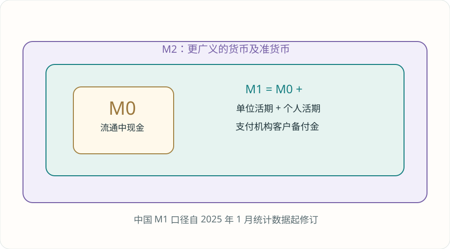
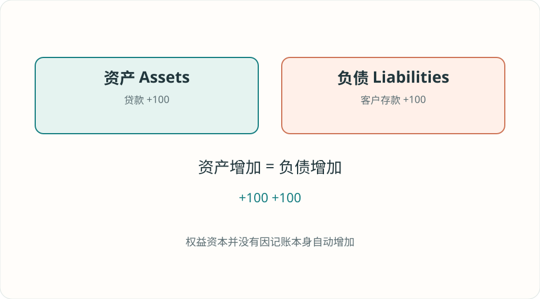
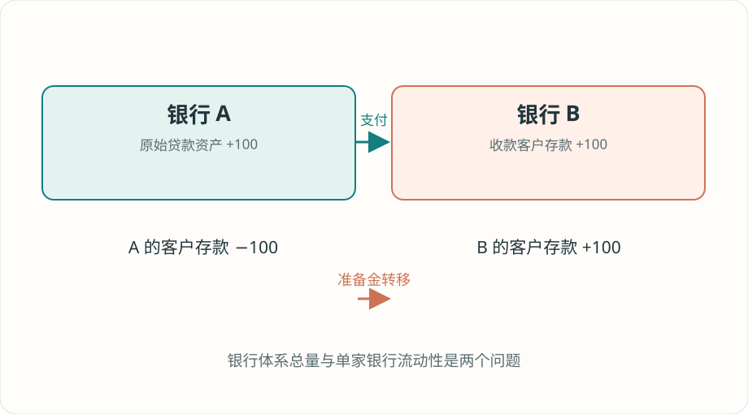

货币与信用创造
银行给借款人发放一笔贷款时，为什么账上会同时出现一笔新的存款？用资产负债表而非神奇的乘数理解信用。
货币是什么：支付工具、计价单位与购买力储藏
货币的三个核心经济功能是交易媒介、计价单位、价值储藏。纸币、商业银行存款及不同形式的支付工具并非同一种发行主体的负债。银行存款通常属于商业银行对存款人的负债，而中央银行准备金是中央银行对持有准备金机构的负债；两者不能混称「印出来的现金」。
M0、M1、M2 的口径为何不能死记
广义货币和狭义货币按流动性及机构制度进行统计分类，不同国家的定义不完全相同，并会随支付工具发展调整。中国人民银行从统计 2025 年 1 月数据起启用修订后的 M1 口径，包括 M0、单位活期存款、个人活期存款与非银行支付机构客户备付金。此前「M1 只等于 M0 加单位活期存款」是旧口径，不能在新序列上继续当作现行定义。

比较新旧增速时，需要使用统计机构处理后的可比数据，不能把修订前后总额直接拼接后解释增速跳变。
贷款创造存款：第一秒的 T 型账户
现在设一家商业银行向一家企业发放新贷款 100 单位，贷款款项首先记入借款人在本行的活期存款账户。在贷款发放的瞬间，银行资产端增加「贷款 +100」，负债端增加「客户存款 +100」，资产负债表两侧同时扩张。

试着改变贷款面额
观察放贷瞬间的账面配对；不表示放贷在现实中无约束。
钱转走之后发生什么？
借款人可能把新存款支付给其他银行的客户。付款行在本行客户负债减少的同时，还需通过银行间清算向收款行转移准备金或其他结算资产；收款行得到结算资产并向其客户记入存款。银行体系整体的存款与单家银行的流动性是不同问题。

现实银行贷款受借款人信用和需求、资本与流动性监管、盈利能力、融资成本和货币政策等约束。英格兰银行的说明明确指出，现代银行体系并不是先拿到一堆储户存款再依照固定准备金率反复「贷出剩余部分」的机械过程。
乘数公式适合当历史教材，不适合当自动预测器
基础课常在银行不持有超额准备金、公众不持现金、固定准备金率且贷款需求足够等极端前提下推导几何级数 1/r。它可以展示一个特殊制度模型的上限结构，却不是实际贷款量必然由基础货币乘以一个固定数字决定的经验规律。
来源与延伸阅读
以下资料用于核对经济学定义与制度口径。文章中的数字化教学模型均非实际宏观统计。